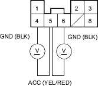

- Turn the ignition switch OFF.
- Disconnect the interlock control unit connector.
- Check for continuity between the No. 3 terminal of the D3 switch/shift lock solenoid connector (6P) and the No. 3 terminal of the interlock control unit connector.
INTERLOCK CONTROL UNIT CONNECTOR D3 SWITCH/SHIFT LOCK SOLENOID CONNECTOR (6P)

Wire side of female terminals
Is there continuity?
YES - Go to step 20.
NO - Check for an open in the wire between the No. 3 terminal of the D3 switch/shift lock solenoid connector (6P) and the interlock control unit. If the wire is OK, check for loose terminal fit in the interlock control unit connector. If necessary, substitute a know-good interlock control unit and recheck. 
- Turn the ignition switch ON (ll).
- Measure the voltage between interlock control unit connector terminals No. 5 and No. 4 or No. 6.
INTERLOCK CONTROL UNIT CONNECTOR

Wire side of female terminals
Is there voltage?
YES - Go to step 22.
NO - Check for an open or short in the wire between the No. 5 terminal of the interlock control unit and the under-dash fuse/relay box. If the wire is OK, repair open in ground wires of the interlock control unit, or repair poor ground (G401).